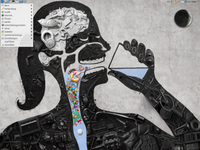
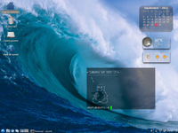
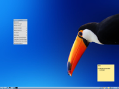
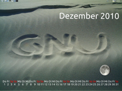
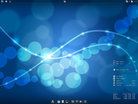
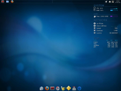

Lubuntu
Archivierte Anleitung
Dieser Artikel wurde archiviert, da er - oder Teile daraus - nur noch unter einer älteren Ubuntu-Version nutzbar ist. Diese Anleitung wird vom Wiki-Team weder auf Richtigkeit überprüft noch anderweitig gepflegt. Zusätzlich wurde der Artikel für weitere Änderungen gesperrt.
 Sammlung von Screenshots - Lubuntu. Der jeweilige Standard-Desktop der unterschiedlichen Versionen ist unter Lubuntu/Bilder zu finden.
Sammlung von Screenshots - Lubuntu. Der jeweilige Standard-Desktop der unterschiedlichen Versionen ist unter Lubuntu/Bilder zu finden.
Weitere Bildergalerien: Ubuntu, Kubuntu, Xubuntu und *buntu.
| Lubuntu | ||
| Screenshot | Informationen | |
|  | ||
| Version: | Lubuntu 12.04 | |
| Thema: | Standard | |
| Icons: | Standard | |
| Wallpaper: | 6B EStudio  | |
| Anwendungen: | Archiv/Cairo Composite Manager (Transparenz-Effekte) - Screenlets (Mond) | |
| Anleitung: | - | |
|  | ||
| Version: | Lubuntu 11.10 | |
| Thema: | Standard | |
| Icons: | Standard | |
| Wallpaper: | Surfer, Hawaii | |
| Anwendungen: | gDesklets für Kalender und Wetterbericht - transparentes Terminal - cowsay | |
| Anleitung: | Desktop-Symbole, transparentes LXpanel, Autostart (für gDesklets) | |
|  | ||
| Version: | Lubuntu 11.04 | |
| Thema: | Standard | |
| Icons: | Standard | |
| Wallpaper: | Scary Exotic Bird | |
| Anwendungen: | (im Panel rechts unten) Clipit - Xpad - Osmo - CPUFreq Frontend | |
| Anleitung: | die Konfiguration des Root-Menüs ( , links am Rand) ist im Artikel Openbox/Pipemenü beschrieben. Für Schatteneffekte sorgt xcompmgr. , links am Rand) ist im Artikel Openbox/Pipemenü beschrieben. Für Schatteneffekte sorgt xcompmgr. | |
|  | ||
| Version: | Lubuntu 10.10 | |
| Thema: | Standard | |
| Icons: | Standard | |
| Wallpaper: | - | |
| Anwendungen: | Screenlets (Mond) | |
| Anleitung: | transparentes LXpanel - der Kalendar ist hier Bestandteil des Hintergrundbilds, könnte aber mit Conky automatisch erstellt werden. | |
|  | ||
| Version: | Lubuntu 10.04 | |
| Thema: | Standard | |
| Icons: | Standard | |
| Wallpaper: | Bokeh Glow HD | |
| Anwendungen: | Conky mit Symbolzeichensatz aus CONKY-colors | |
| Anleitung: | oberes Panel: tint2, unteres Panel: ADesk Bar | |
|  | ||
| Version: | Lubuntu 9.10 | |
| Thema: | Standard | |
| Icons: | Standard | |
| Wallpaper: | Blue  | |
| Anwendungen: | Conky mit Symbolzeichensatz aus CONKY-colors | |
| Anleitung: | oberes Panel: tint2, unteres Panel: ADesk Bar | |
| << zurück |
- Erstellt mit Inyoka
-
 2004 – 2017 ubuntuusers.de • Einige Rechte vorbehalten
2004 – 2017 ubuntuusers.de • Einige Rechte vorbehalten
Lizenz • Kontakt • Datenschutz • Impressum • Serverstatus -
Serverhousing gespendet von